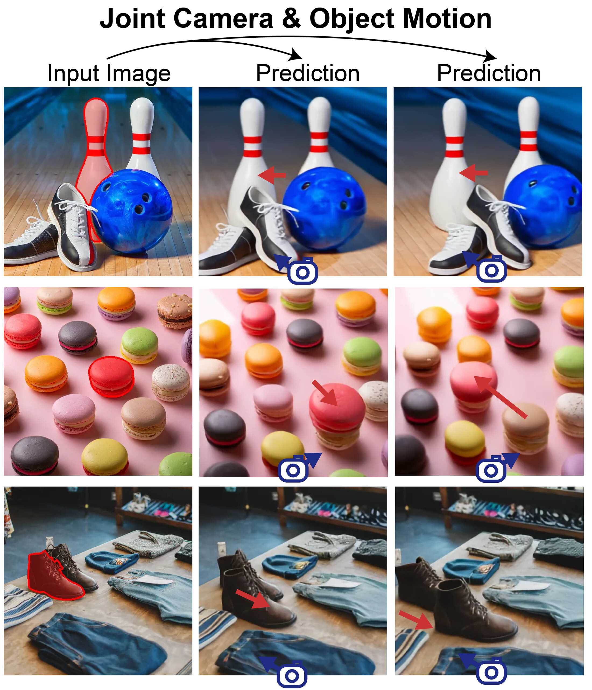
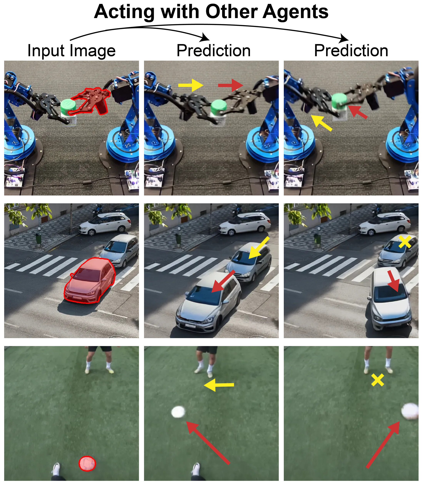
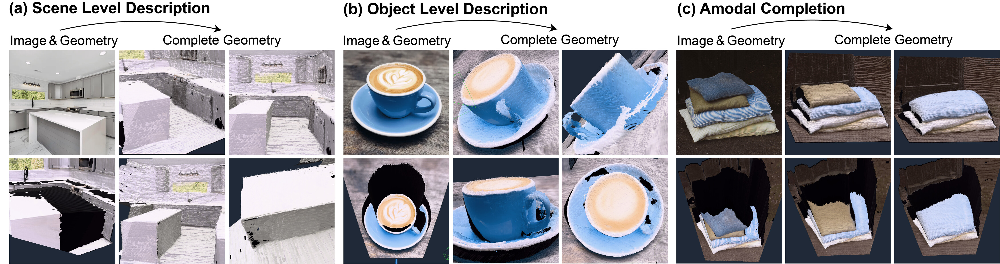
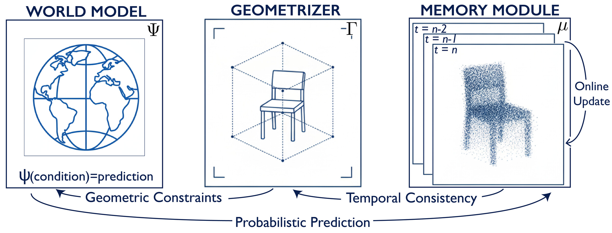
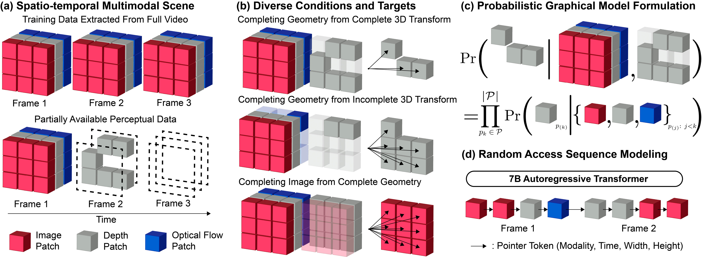
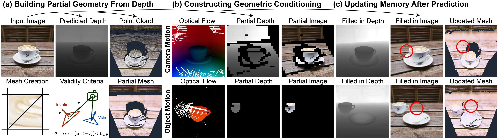

Perceptual 3D Simulation with Physical World Modeling
Real-world simulation starts from partial information. Inside a game engine, 3D simulation is easy, because the full state of the scene and its dynamics are known, so any change can be rendered exactly. Real-world scenes give us far less. We only ever observe part of the state, and the dynamics we know are often just the local action we take. Most of the scene is occluded, and one local action tells us little about its global consequences.
Our model predicts any scene element from any others. We represent the scene as a probabilistic graphical model whose nodes are local scene elements that capture both state and dynamics, namely RGB, depth, and optical flow. This physical world model, which we call Ψ, supports any-to-any prediction, conditioning on whichever elements we know and predicting whichever ones we do not. We build a perceptual 3D simulation system, P3Sim, around it. The rest of this post shows what any-to-any prediction enables and how we build the full system.
What any-to-any prediction enables
The same model handles known and unknown dynamics. When the 3D motion of the visible surfaces is known, the model predicts the change that motion implies, as in moving the camera and an object together. It still fills in parts it cannot see, like the back of an object, with probabilistic predictions. When even the visible motion is only partly known, it predicts a distribution over plausible dynamics of the rest of the scene, as in acting with other agents. The next two results show each case.
The camera and an object can move at once. When the dynamics of the visible surfaces are fully known, we can compute the optical flow and the new depth that the transform produces, and pass them to the model as conditioning. The example shows the model composing a global viewpoint change with a local object transform.

Other agents react in uncertain ways. When the dynamics are only partly known, moving one agent changes the dynamics of the rest of the scene, and those dynamics have multiple plausible outcomes. Given the motion of a single agent (red arrows), P3Sim makes probabilistic predictions of the induced motion of the rest (yellow arrows), yielding a distribution over plausible outcomes.

Predictions accumulate into 3D geometry. Integrated over time, they form a consistent 3D description that can be read out at the scene level, at the object level, and even as amodal completion of structure that is not fully visible in a single frame.

How we build it
P3Sim has three components. A physical world model (Ψ) does the prediction, a geometrizer (Γ) turns a desired transform into geometric conditioning, and a persistent scene memory (μ) integrates predictions over time.

A random-order sequence model makes any-to-any prediction tractable. Predicting every element from every possible subset of the others looks intractable. We serialize the scene elements into a sequence of pointer and value pairs and train a single 7B autoregressive transformer, randomizing the order of the elements in each sequence. Each pointer represents a location, time, and modality, so decoding becomes random access and the model can be queried for any element given any others.

The geometrizer and scene memory feed the model geometric conditioning. Each observation or prediction contributes partial geometry to the persistent scene memory μ, which integrates them into a running 3D estimate. The geometrizer then converts this memory and the desired 3D transforms into geometric conditioning, reprojecting valid and visible surfaces to the target view as the partial depth and flow that the world model conditions on.

P3Sim simulates 3D scenes from perception. Together these pieces make one autoregressive world model, a step toward general-purpose physical world models that predict how scenes change under partial observations and incomplete 3D transforms.